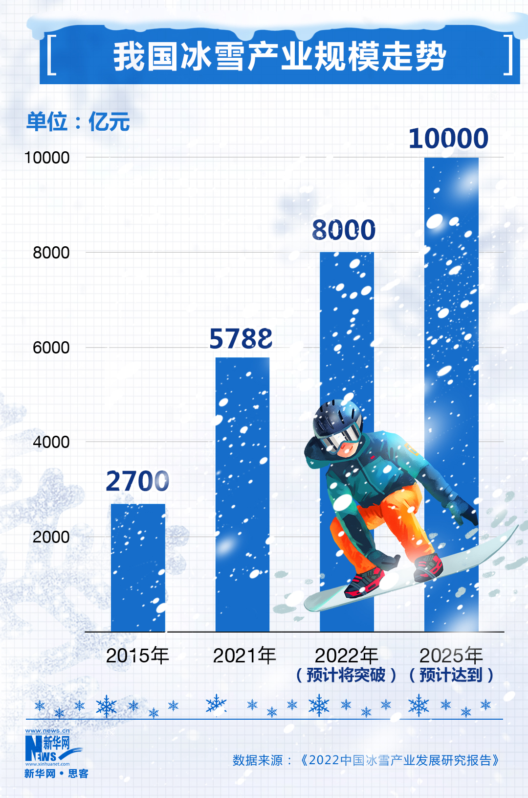

根据《2022中国冰雪产业发展调查报告》显示，自2015年北京获得2022年冬奥会和冬残奥会举办权，至2021年10月底，中国参与过冰雪运动的人数为3.46亿，冰雪运动参与率达到24.56%。同时，我国冰雪产业规模在2021年逐步走出疫情影响，达到5788亿元，比2020年增长51.88%，按照目前的增长速度，预计2022年将达到8000亿元，并有望在2025年突破万亿规模。
图片来源：新华网
截至去年底，我国拥有冰雪场地2261个（滑冰场1450个、滑雪场811个），场地面积0.77亿平方米，占全国体育场地面积的2.26%。冰雪运动参与人数和参与率方面，江苏省、山东省均达到2600万人，北京（55.24%）则在参与率上仅次于黑龙江省（57.80%），排名全国第二位。《报告》指出，作为冰雪运动普及与推广的重要支撑，冰雪旅游在2021至2022雪季随着我国对新冠疫情的有效控制逐渐恢复，3.12亿人次（超过疫情前2.24亿人次的高点）为整个行业带来3900亿元的收入。其中，北京贡献12%的冰雪旅游客源，占全国首位。
《报告》还展望了“后冬奥时代”的中国冰雪产业发展，指出目前我国冰雪运动基础扎实，但仍有极大潜力待开发。目前我国滑雪人口达到1500万人，占总人口约1%，不仅远低于欧美国家，也明显少于日本（9%）、韩国（6%）两个亚洲国家。《报告》认为，随着北京冬奥会的成功举办，以及优质冰雪资源的深入开放、新技术的广泛应用，未来我国冰雪产业将有至少10年的高速增长期。
随着北京冬奥会举办一周年这一时间节点的到来，我们对冬奥遗产在赛后的使用进行了一定汇总。
北京地区以本次冬奥周年纪念系列活动为契机，积极倡导各场馆在系列活动期间全面对公众开放，通过因地制宜组织开展形式多样、各具特色的群众性体育文化活动，营造浓厚的全民参与氛围。一方面方便广大群众在家门口就能参与冰雪运动，享受到冬奥场馆带来的红利。另一方面通过叠加放大这种带有节庆性质的系列活动的效应，吸引群众走进场馆，从而助力场馆赛后利用。
首钢滑雪大跳台作为世界上首个永久保留的滑雪大跳台，冬奥之后，这里已经投入后冬奥运营工作中。举办了包括首钢园冰雪汇活动等等。
冰立方则是依托其独特的优势，以“水冰双驱”成为场馆常态化运营方式。集滑冰、游泳、冰壶三大项目于一身，举办了包括“冰立方冬奥文化大众体验季”、“水立方冬令营”、“冰立方冰迷欢享季”在内的多项群众活动。首届和等活动，开展包括冰壶、滑冰、游泳、舞蹈、乒乓球等大众健身和体验活动。
国家速滑馆除了将举办“辉煌冬奥”主题展览及群众性冰雪运动嘉年华，还在2月4日举办了“冰丝带市民速度滑冰系列赛首站”活动。
除冰雪运动外，冬奥场地也在积极举办具有当地特色的非冰雪运动活动。由北京冬奥村运行区改造而成的北投奥园1314项目是占地约7.5万平方米的体育主题特色园区，将在系列活动期间举办元宵节文化活动和大众羽毛球赛事。